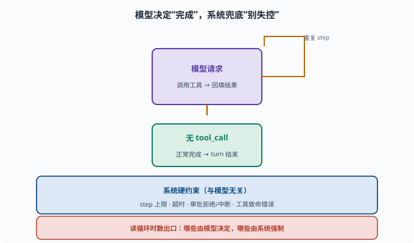

拆解 Agent 循环：读 turn/step 驱动
目标：在 packages/core/agent-loop 里读懂 turn/step 是如何被驱动的。读完这一页，你能画出"模型请求→执行工具→观察→再请求"在代码里的落点，也知道守卫监听在哪。
agent-loop 包在做什么
packages/core/agent-loop 是"思考–行动–观察"循环的工程化实现（08-03）：
turn（一轮）：处理一个请求到最终答复
step（一步）：一次"模型请求 + 可能的工具执行"
它把 ReAct 的概念转成可运行的控制流。
循环的"骨架"在代码里的样子
读代码常看到与下面等价的逻辑：
while（未终止）{
const res = await model.call(messages, tools) // 思考，可能带 tool_call
记录事件到 session
if（无 tool_call）break // 完成
for（每个 tool_call）{
结果 = await 执行工具(tool_call) // 行动
记录 tool 结果事件
messages.push(tool_result) // 观察回填
}
检查守卫（步数、超时、审批）
}
找这些关键词能快速定位：turn、step、tool、model、break。
step 的关键事件
每个 step 通常伴随事件（这也串起会话日志，10-03）：
模型请求事件（含请求内容）
工具调用事件（含参数）
工具结果事件（含真实返回）
这使得"每一步模型看到了什么"都被记下。
终止与守卫在哪
循环的"安全阀"通常散落在几处：
无 tool_call → 正常终止
step 上限 → 强制停
超时/审批 → 通过 interaction/guard 挂钩
致命错误 → 停止并上报
读循环时数一数：它有几个"出口"？哪些是模型决定、哪些是系统硬约束？

上图把循环的"出口"分成两类看：中间那道向下的绿色路径是模型决定——当模型返回不带 tool_call 的最终答案，循环就走"正常完成"出口；而围绕它的是一条反复"模型请求 → 执行工具 → 回填结果"的回路。下方那条蓝色带子里列的是系统硬约束——step 上限、超时、审批拒绝/中断、工具致命错误，这些跟模型想不想停无关，是框架兜底的"刹车"。读循环代码时把出口分两类数，就能立刻看出哪些是自主终止、哪些是强制熔断。
用 rg 导航
rg -n "turn|step|tool_call|model\.call|break" packages/core/agent-loop/src
重点理解"控制流"而非"每个细节"：模型请求、工具执行、结果回填、终止判断是四个锚点。
循环与"可插桩"
因为每一步都发事件/可挂监听，外部插件能在关键点介入（09-04）：
审批插件：工具执行前拦截
日志插件：记录指标
守卫插件：限制步数/超时
所以循环不改核心也能增强——这就是能力缝的意义。
思考题
- turn 和 step 在 agent-loop 里各代表什么？
- 循环通常在哪几个点"发起/消费"会话日志？
- 循环的正常终止条件是什么？
- 除了模型自主终止，还有哪些系统硬约束能停止循环？
- 为什么说 agent-loop 是"可插桩"的？
参考答案
- turn 是处理一个请求到最终答复；step 是 turn 内一次"模型请求+可能的工具执行"。
- 模型请求前后追加请求事件、工具调用追加调用事件、工具返回追加结果事件，从而让每一步"模型视角"可重建。
- 模型返回不带 tool_call 的最终答案（即模型认为任务完成）。
- step 数上限、超时、工具致命错误、审批拒绝/中断等系统层面的硬约束。
- 因为每一步都发事件、可被插件监听/拦截，外部插件（审批、日志、守卫）能在关键点介入而不改核心循环。
下一步
- 想从零写一个工具注册到循环里 → 10-05 写一个工具。
- 想复习循环与事件驱动 → 09-04 事件驱动循环。
- 想了解 step 的守卫 → 08-03 Agent 循环。